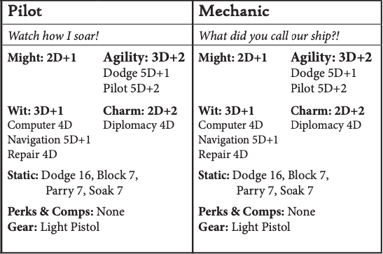

I finished reading Dyskami Publishing’s Demonicity tonight (PDF). I liked the document design and found it easy to read, except the “Demon City” two page spread which I found a pain to read because of the body font. I liked the artwork; it was not particularly anime or manga like, unlike BESM Fourth Edition. There were a few typos, missing words, and other minor mistakes, but there was only one that hindered comprehension, and that one I figured out eventually from the context. The rules are easy to understand.
The setting of Demonicity is the titular “Demon City”, a city that is the location of an attack by demons from an different world/dimension. It is obviously inspired by their earlier licensed RPG, Demon City Shinjuku, which I quite liked.
Demonicity has a very interesting stripped down version of the Tri-Stat system that makes character generation and play much simpler. In some ways it reminds me of BESM First Edition, though it is even simpler. The three Stats are Body, Mind, and Soul, of course, so that’s the same. There are also Attributes, which are the special things a character can do. Stats can be determined randomly or assigned by the player, and they and Attributes always cost points. And there are some Derived Values: Combat, Health, Sanity.
You roll 2d6 and add a stat or a derived value (like Combat), plus optionally an Attribue’s level, and compare the result to a target number or an opposed roll. Things that make something easier are Edges: you get an extra die or two on your dice roll, and you keep the highest two. Things that make something harder, like trying to use two weapons at once without training, gives you Obstacles: an extra die or two on your dice roll, but you keep the two lowest rolls. Edges cancel out Obstacles and vice versa. Combat is theater of the mind.
Demoicity’s version of BESM’s Attributes are quite stripped down. There are only nine: Adaptability, Damage, Demonicity, Fighting, Knacks, Movement, Resistance, Resources, and Skills. These are bought in levels as usual, but associated with each are a number of Foci (as many as one has levels in the Attribute), which gives the character a special ability. Demonicity is the Attribute that allows a character to do most of the more impressive supernatural things, for instance. A few of its Foci are Healing, Meld (mere with inanimate objects), and Shadow Form. The Fighting Attribute makes a character more proficient at combat than their Stats would suggest, and it’s Foci specify which kinds of Fighting you are better at (Melee or Ranged), or makes it easier to do certain things in combat (Blind Fighting, Two Weapons). Generally, an Attribute’s level adds to dice rolls for things associated with it, while having an appropriate Foci means that you get an Edge. After every session characters get a few points to increase their Stats and Attributes.
The rulebook is only 32 pages long and has a thicker card stock cover. It is accompanied by six one page adventures with related art on the back and by six pre-generated characters with an image of the character on the back, all on card stock. There are also four six-sided dice. The box everything comes in seems sturdy. In general the production values are quite good.
People who are confident with their improvisation skills can probably run the adventures easily, but those who like more details will probably want to do a bit more preparation. The adventures appear designed to be easily linked into a six episode mini-campaign, or can form the backbone of a longer campaign if the GM writes their own adventures.
I like the inclusion of the pre-generated characters and the one page adventures. They allow a gaming group to pick the game and start playing with little or no preparation. And the simplified rules make it easy to learn the game, and to create characters if the gaming group doesn't want to use the pre-generated characters. I think this makes it an excellent pick-up-and-play game.
I would like to have seen something like the adventure generators from various Savage Worlds setting books or Toon and its supplements. They allow the GM who is stuck for ideas to come up with something quickly when inspiration is lacking. But it would have been difficult to fit in the constraints of the product. Perhaps on another sheet of card stock, since I can’t see deleting anything from the rulebook? BESM and Tri-Stat generally have very little procedural support for coming up with NPCs, scenes, adventures, etc., and I think an adventure generator would be a useful addition. Of course, having the example adventures to give an idea of what Demonicity adventures would be like is very useful.
All in all, I quite like Demonicity and hope to play it soon. My only reservations are about the price of this game and the other two Tri-Stat boxed games, Pixies and Wyrms. Forty-five retail dollars Canadian for the physical product seems like a lot. The PDF seems more reasonable at 15 dollars.
When I did a search for “splitting strings on a delimiter in the Ada
programming language” recently I did not get many useful results.
Eventually I stumbled over GNAT.String_Split which is an
instantiation of the generic package GNAT.Array_Split. I also
finally foundGNATCOLL.Strings_Impl and GNATCOLL.Strings, its
default instantiation, which looks especially interesting, contains
a split implementation, and which seems to be designed to be a more
efficient string implementation than than Ada.Strings.Unbounded.
However, those are all a little complicated, so it might be
appropriate to show a simpler implementation.
The String type in Ada is a array of characters. Once
declared, a String variable always has the same length. That
means that all the strings in an array of strings have to be the same
length. However, an access (Ada's version of a
pointer) to a String can point to a string of any length, so for
this version we'll return an array of pointers to String.
withAda.Strings;useAda.Strings;withAda.Strings.Fixed;useAda.Strings.Fixed;withAda.Text_IO;withAda.Integer_Text_IO;useAda.Integer_Text_IO;proceduresplit_fixedis-- Ada.Text_IO contains a type, Count, that would conflict with-- the function Ada.Strings.Fixed.Count, so don't "use Ada.Text_IO;"-- instead, make a package the gives it a shorter name, and use all its-- procedures with that as the prefix.packageATIOrenamesAda.Text_IO;typeString_PtrisaccessString;typeVectorisarray(Naturalrange<>)ofString_Ptr;-- Allocate a new String in a storage pool, initializing it to S, and-- returning an access to it (a pointer).function"+"(Source: inString)returnString_PtrisSP:String_Ptr:=newString'(Source);beginreturnSP;end"+";functionSplit(S: String;Pattern: String)returnVectorisStart:Positive:=1;Position:Natural;Num_Parts:Natural:=Count(S,Pattern)+1;V:Vector(1..Num_Parts);I:Natural:=0;beginwhileStart<=S'LengthloopPosition:=Index(S,Pattern,Start);exitwhenPosition=0;I:=I+1;V(I):=+S(Start..Position-1);-- The pattern can be longer than one character.Start:=Position+Pattern'Length;endloop;I:=I+1;V(I):=+S(Start..S'Last);returnV;endSplit;procedurePrint_Vector(Label: String;S: String;V: Vector)isN:Natural:=0;beginATIO.Put_Line(Label&": """&S&"""");forIinV'First..V'LastloopN:=N+1;ATIO.Put(" Part ");Put(N,0);ATIO.Put(": """);ATIO.Put(V(I).all);ATIO.Put_Line("""");endloop;endPrint_Vector;S1:String:="Hello, World!|I am fine!|How are you?";V1:Vector:=Split(S1,"|");S2:String:="";-- Empty string.V2:Vector:=Split(S2,"|");S3:String:="|";-- Just one of pattern.V3:Vector:=Split(S3,"|");S4:String:="||";-- Just two of pattern.V4:Vector:=Split(S4,"|");S5:String:="one";-- Just one part.V5:Vector:=Split(S5,"|");-- The delimiter doesn't have to be one character.S6:String:="foo<=>bar";V6:Vector:=Split(S6,"<=>");beginPrint_Vector("S1",S1,V1);Print_Vector("S2",S2,V2);Print_Vector("S3",S3,V3);Print_Vector("S4",S4,V4);Print_Vector("S5",S5,V5);Print_Vector("S6",S6,V6);endsplit_fixed;
Here's the output:
S1: "Hello, World!|I am fine!|How are you?"
Part 1: "Hello, World!"
Part 2: "I am fine!"
Part 3: "How are you?"
S2: ""
Part 1: ""
S3: "|"
Part 1: ""
Part 2: ""
S4: "||"
Part 1: ""
Part 2: ""
Part 3: ""
S5: "one"
Part 1: "one"
S6: "foo<=>bar"
Part 1: "foo"
Part 2: "bar"
The Bounded_String type in Ada has a maximum capacity and a
current length. You instantiate a new package for each different
maximum capacity that you want, producing a different type for each.
You can assign any string smaller than or equal to the maximum length,
and the current length is recorded.
withAda.Strings;useAda.Strings;withAda.Strings.Bounded;useAda.Strings.Bounded;withAda.Text_IO.Bounded_IO;withAda.Text_IO;useAda.Text_IO;withAda.Integer_Text_IO;useAda.Integer_Text_IO;proceduresplit_boundedispackageB_Stringis newAda.Strings.Bounded.Generic_Bounded_Length(Max=> 128);useB_String;packageB_String_IOis newBounded_IO(B_String);useB_String_IO;typeVectorisarray(Naturalrange<>)ofBounded_String;functionSplit(S: Bounded_String;Pattern: String)returnVectorisStart:Positive:=1;Position:Natural;Num_Parts:Natural:=B_String.Count(S,Pattern)+1;V:Vector(1..Num_Parts);I:Natural:=0;beginwhileStart<=Length(S)loopPosition:=Index(S,Pattern,Start);exitwhenPosition=0;I:=I+1;V(I):=Bounded_Slice(S,Start,Position-1);-- The pattern can be longer than one character.Start:=Position+Pattern'Length;endloop;I:=I+1;V(I):=Bounded_Slice(S,Start,Length(S));returnV;endSplit;procedurePrint_Vector(Label: String;S: Bounded_String;V: Vector)isN:Natural:=0;beginPut_Line(label&": """&S&"""");forIinV'First..V'LastloopN:=N+1;Put(" Part ");Put(N,0);Put(": """);Put(V(I));Put_Line("""");endloop;endPrint_Vector;S1:Bounded_String:=To_Bounded_String("Hello, World!|I am fine!|How are you?");V1:Vector:=Split(S1,"|");S2:Bounded_String:=To_Bounded_String("");-- Empty string.V2:Vector:=Split(S2,"|");S3:Bounded_String:=To_Bounded_String("|");-- Just one of pattern.V3:Vector:=Split(S3,"|");S4:Bounded_String:=To_Bounded_String("||");-- Just two of pattern.V4:Vector:=Split(S4,"|");S5:Bounded_String:=To_Bounded_String("one");-- Just one part.V5:Vector:=Split(S5,"|");-- The delimiter doesn't have to be one character.S6:Bounded_String:=To_Bounded_String("foo<=>bar");V6:Vector:=Split(S6,"<=>");beginPrint_Vector("S1",S1,V1);Print_Vector("S2",S2,V2);Print_Vector("S3",S3,V3);Print_Vector("S4",S4,V4);Print_Vector("S5",S5,V5);Print_Vector("S6",S6,V6);endsplit_bounded;
Here's the output:
S1: "Hello, World!|I am fine!|How are you?"
Part 1: "Hello, World!"
Part 2: "I am fine!"
Part 3: "How are you?"
S2: ""
Part 1: ""
S3: "|"
Part 1: ""
Part 2: ""
S4: "||"
Part 1: ""
Part 2: ""
Part 3: ""
S5: "one"
Part 1: "one"
S6: "foo<=>bar"
Part 1: "foo"
Part 2: "bar"
The Unbounded_String type in Ada grows dynamically as needed,
but is not as time efficient as fixed strings or bounded strings.
For this version, we'll use Ada.Containers.Vectors for a
dynamically expending vector, rather than a fixed size vector.
withAda.Strings.Unbounded;useAda.Strings.Unbounded;withAda.Text_IO;useAda.Text_IO;withAda.Integer_Text_IO;useAda.Integer_Text_Io;withAda.Text_IO.Unbounded_IO;useAda.Text_IO.Unbounded_IO;withAda.Containers.Vectors;proceduresplit_unboundedispackageUnbounded_String_Vectorsis newAda.Containers.Vectors(Natural, Unbounded_String);useUnbounded_String_Vectors;function"+"(Source: inString)returnUnbounded_StringrenamesTo_Unbounded_String;subtypeUBS_VectorisUnbounded_String_Vectors.Vector;functionSplit(S: Unbounded_String;Pattern: String)returnUBS_VectorisStart:Positive:=1;Position:Natural;Num_Parts:Natural:=0;V:UBS_Vector;beginwhileStart<=Length(S)loopPosition:=Index(S,Pattern,Start);exitwhenPosition=0;Append(V,Unbounded_Slice(S,Start,Position-1));-- The pattern can be longer than one character.Start:=Position+Pattern'Length;endloop;Num_Parts:=Num_Parts+1;Append(V,Unbounded_Slice(S,Start,Length(S)));returnV;endSplit;procedurePrint_UBS_Vector(Label: String;S: Unbounded_String;V: UBS_Vector)isN:Natural:=0;beginPut_Line(Label&": """&to_string(s)&"""");forIinV.First_Index..V.Last_IndexloopN:=N+1;Put(" Part ");Put(N,0);Put(": """);Put(V(I));Put_Line("""");endloop;endPrint_UBS_Vector;S1:Unbounded_String:=+"Hello, World!|I am fine!|How are you?";V1:UBS_Vector:=Split(S1,"|");S2:Unbounded_String:=+"";-- Empty string.V2:UBS_Vector:=Split(S2,"|");S3:Unbounded_String:=+"|";-- Just one of pattern.V3:UBS_Vector:=Split(S3,"|");S4:Unbounded_String:=+"||";-- Just two of pattern.V4:UBS_Vector:=Split(S4,"|");S5:Unbounded_String:=+"one";-- Just one part.V5:UBS_Vector:=Split(S5,"|");-- The delimiter doesn't have to be one character.S6:Unbounded_String:=+"foo<=>bar";V6:UBS_Vector:=Split(S6,"<=>");beginPrint_UBS_Vector("S1",S1,V1);Print_UBS_Vector("S2",S2,V2);Print_UBS_Vector("S3",S3,V3);Print_UBS_Vector("S4",S4,V4);Print_UBS_Vector("S5",S5,V5);Print_UBS_Vector("S6",S6,V6);endsplit_unbounded;
Here's the output:
S1: "Hello, World!|I am fine!|How are you?"
Part 1: "Hello, World!"
Part 2: "I am fine!"
Part 3: "How are you?"
S2: ""
Part 1: ""
S3: "|"
Part 1: ""
Part 2: ""
S4: "||"
Part 1: ""
Part 2: ""
Part 3: ""
S5: "one"
Part 1: "one"
S6: "foo<=>bar"
Part 1: "foo"
Part 2: "bar"
There are a lot of things to like about the Ada programming language;
it seems to have a solid core of users, enough to support multiple
commercial implementations and a free/libre software implementation
that is part of the GNU Compiler Collection. I occasionally use it
myself.
However: I'm sure that the current version of Ada Mode for
Emacs (available as an ELPApackage, and thus not included in
Emacs itself), which provides smart editing for the Ada
programming language, and uses an external parser for the indentation,
fontification[1], and navigation engine, is wonderful
if you can get it working, but I have never been able to get it to
work. My most recent try was today on Fedora 36 using GNAT 12.1.1
20220507 (Red Hat 12.1.1-1).
Here's what happened when I tried to build the Ada code for the
parser, which is supplied as part of the ada-mode:
$ ./build.sh
ada_mode_wisi_parse.gpr:44:26: warning: object directory "obj" not found
Setup
[mkdir] object directory for project Ada_Mode_Wisi_Parse
Compile
[Ada] ada_mode_wisi_lalr_parse.ads
[Ada] ada_mode_wisi_lr1_parse.ads
[Ada] run_ada_lalr_parse.ads
[Ada] run_ada_lr1_parse.ads
[Ada] gpr_mode_wisi_parse.ads
[Ada] run_gpr_parse.ads
[Ada] gpr_query.adb
[C] wisitoken_grammar_re2c.c
[C] ada_re2c.c
[C] gpr_re2c.c
[Ada] ada_process_actions.adb
[Ada] ada_process_lr1_main.adb
[Ada] gen_run_wisi_lr_text_rep_parse.adb
[Ada] run_wisi_common_parse.adb
[Ada] wisi.adb
gnatcoll-sql.adb:742:07: error: ambiguous expression (cannot resolve "Append")
gnatcoll-sql.adb:742:07: error: possible interpretation at a-coinve.ads:280, instance at gnatcoll-sql.ads:1109
gnatcoll-sql.adb:742:07: error: possible interpretation at a-coinve.ads:270, instance at gnatcoll-sql.ads:1109
compilation of gpr_query.adb failed
gprbuild: *** compilation phase failed
Sigh. Without the external parser the current Ada Mode is
completely unworkable: it doesn't even do indentation correctly, much
less do fontification.
However, when I did some Ada work a number of years ago, I was ok
with the version that used to be in Emacs itself. So I dug it
out of the Emacs git repository at savannah.gnu.org. Basically,
I cloned the git repository and then figured out what commit it was
deleted in by doing:
$ git rev-list HEAD -n 1 -- lisp/progmodes/ada-mode.el
a13c64204c8ead966789abf8efe176e4f2d4f599
The ^ at the end of the commit hash says to get the previous
commit.
You'll also need doc/docstyle.texi and
doc/docstyle.texi if you want to build documentation from
ada-mode.texi.
And I've put the files in a zip file for anybody who is in the same
situation as I was, along with the generated documentation files
.info, .html, and .pdf.
Just put them somewhere on your load-path and add (autoload
'ada-mode"ada-mode") to your emacs config file.
I'm sure the current Ada Mode has a lot more useful features, and
I'd love to use it, but
this at least lets me edit with automatic indentation, formatting, and
fontification.
This was an excellent retrospective of Niklaus Wirth's work, covering
the many important (and sometimes neglected) innovations he and his
coworkers created. Although it was published in 2000 it is still a
very interesting and inspiring read.
Niklaus Wirth is perhaps best known for Pascal. I learned Pascal
early on in my computing career, and found it much more to my taste
than BASIC, the language I had the most experience with previously. I
programmed in Apple Pascal (based on UCSD Pascal) on the Apple
II+, and used Pascal on the original Macintosh. Much of my
instruction at college used Oregon Software's Pascal 2 system for
VAX/VMS. I also had an opportunity to use Pascal at work, using
Turbo Pascal on MS-DOS. While I found the expressiveness and power
of C very attractive, I still found the simpler syntax and safer type
system of Pascal very worthwhile, and missed it when writing C.
However, I found Wirth's later programming language, Oberon (see the
original and revised language reports, and at archive.org: OO,
OR), and the operating system it was developed for, also called
Oberon, to be even more interesting. While I never used the Ceres
computer on which Oberon originally ran, I did used the later
versions of the Oberon system that ran hosted on Linux. I was
particularly inspired by the further development of Oberon-2,
designed by Wirth and Hanspeter Mössenböck (see the language report,
O2A, O2B), and used in a wonderful book, Object-Oriented
Programming in Oberon-2, also by Mössenböck (OOP1, OOP2, and at
archive.org: OOP1A, OOP2A).
Unfortunately most of my work at that time involved Unix heavily, and
it was difficult to write Oberon programs that interacted directly
with Unix, because Oberon's APIs were quite different than those of
Unix and C. (I've since found some Oberon compilers that work a
little better on Unix machines, but most Oberon software continues to
be specific to the Oberon system.
I wish more people had taken more lessons from Niklaus Wirth when designing
the programming languages and operating systems that turned out to
dominate the computer systems of today.
Do you like D&D 5E, but would like to have it with with point-based
character generation, effects-based rules, and an Anime
flavour? Well Anime 5E: Fifth Edition Fantasy
Role-Playing Adventures is what you want.
My physical copies of Anime 5E: Fifth Edition Fantasy Role-Playing
Adventures (home page, Kickstarter, and DriveThruRPG page)
from Dyskami Publishing Company and Mark C. MacKinnon came
today, and I have only had a chance to briefly skim the pocket
edition, but I'm pleased at what they managed to fit into the small
package of 384 pages and a physical size of approximately 12.5cm wide
× 18.9cm tall × 2.25cm thick (4 15/16in wide × 7 13/32in tall ×
27/32in thick) and still have the text be large enough to read.
Here's a picture of the Pocket Edition, with another picture with my
hand covering the book for size comparison:
While I agree that adding the flexibility of Dynamic Powers attribute
as magic (p. 154) is very interesting I would like to have seen a
little guidance for using the rest of the attributes as spells using
the Deplete limiter (p. 237) and the optional Energy rules (p. 280);
I've seen the similar rules in BESM (BESM1, BESM2) used very well.
I'll have to wait until I get a chance to peruse the hardback version
to comment on the art.
Later: I just have to add: OMG! Battle Cabbits! (On p. 367.) So
cute! Now, if they only turned into spaceships as well...
I also liked the Items chapter, especially the “Ring of Power”.
Why is this useful? It allows you to compile a language that requires
proper tail call optimization to one that does not provide that.
For instance, if you wanted to compile Scheme, which requires proper
tail call optimization, to Common Lisp, which does not require proper
tail call optimization, you can't just translate Scheme functions
directly into Common Lisp functions, because tail calls allocate stack
space, and eventually the stack will run out of space.
Here's an example that will run forever in any standard confirming
Scheme, forever.scm:
;;; Recurse forever, because with tail call optimization, the stack;;; never runs out!(definei0)(define(f)(set!i(+1i))(display"call #")(displayi)(newline)(f))(f)
;;; Recurse until the stack space runs out.(defparameteri0)(defunf()(incfi)(formatt"call #~d~%"i)(f))(f)
Now, some Common Lisp implementations don't do tail call
optimization, and some do. Some don't do tail call optimization
unless you compile the functions in question.
So, for instance, if I load that file into GNU CLISP 2.49.92, the
function executes about 4668 times and then CLISP dies with the
error message:
*** - Lisp stack overflow. RESET
However if I compile that file in CLISP with the Common Lisp function
compile-file and then load the resulting .fas file into
CLISP, it will run forever, because CLISP does tail call
optimization when it compiles code.
Furthermore, if I load that file into SBCL it will run forever,
because SBCL does tail call optimization by default.
ECL is another Common Lisp system where if you load that file
into an interactive session it will die with stack overflow, but if
you compile that file into an executable it will run forever.
So, suppose you wanted to translate the Scheme code into Common Lisp.
You'd use a trampoline to make sure the stack doesn't overflow.
Here's trampoline.lisp, a trampoline in Common Lisp that runs
through three functions and then stops, for simplicity:
;;; Recurse forever without running out of stack space.(defunbaz()(formatt"baz~%")#'foo)(defunbar()(formatt"bar~%")#'baz)(defunfoo()(formatt"foo~%")#'bar)(let((f#'foo))(loopforifrom1while(not(nullf))do(progn(formatt"trampoline call #~s~%"i)(setff(funcallf)))))
Of course, you can do the same things in C. First, here's
not_forever.c, a program in C that will (usually) die with a stack
overflow:
/* Recurse until stack space runs out. Unless the compiler does tail-call optimization. */#include<stdio.h>staticinti;/* Number of times f has been called. */voidf(void){i++;printf("call #%d\n",i);f();}intmain(intargc,char**argv){i=0;f();}
I say usually, because tail call optimization is not required by the
standard, and many C compilers do not do it. For instance, gcc
doesn't do tail call optimization unless you specify
-foptimize-sibling-calls or -O2, -O3, or -Os. If I
don't specify any of those options, on my system that program dies
with the error Segmentation fault: 11 after call #523932.
/* Recurse forever without running out of stack spacc. */#include<stdio.h>typedefvoid*(*trampoline)(void);void*foo(void);/* Forward declaration. */void*baz(void){printf("baz\n");returnfoo;}void*bar(void){printf("bar\n");returnbaz;}void*foo(void){printf("foo\n");returnbar;}intmain(intargc,char**argv){trampolinet=foo;while(t)t=t();return0;}
So, here's where C's weak typing lets it get away with things that
more strongly typed languages don't. Notice the declaration of the
trampoline type:
typedefvoid*(*trampoline)(void);
Notice how it returns a void *, instead of something more
specific? That's because if it tried to return something more
specific, it would have to a recursive type: that is to say, while
defining the type trampoline, you would use a reference to the
type while defining the type. It would look something like this:
typedeftrampoline*(*trampoline)(void);
and that results in gcc issuing the following error:
error: unknown type name 'trampoline'
Very few traditional programming languages allow this. It isn't a
problem in Scheme or Common Lisp because those languages use strong
dynamic typing, where the types are checked at runtime.
So how do you do this in languages with strong static typing?
Well, let's try this in some of the Oberon programming language
dialects. Oberon was designed and implemented by Niklaus Wirth
(NW1, NW2) as a simplification and generalization of his earlier
languages Pascal, Modula, and Modula-2. (Here's The Programming
Language Oberon (1990), the original Oberon language report, in PDF
for reference.) I find the original Oberon admirable for its
simplicity, strong typing, understandable syntax, and its introduction
of Type Extensions (which organizes record types in a
inheritance hierarchy, which with the use of procedure variables
enables object oriented programming in a particularly straightforward
and flexible way) but struggle with its minimalism and how its
standard libraries differ in paradigm from the standard Unix
libraries, since Oberon was used to implement a new operating system,
the Oberon System with its own completely unique API.
Here's a copy of the Oberon-2 language report in PDF (O2PDF) and HTML
(O2HTML), for reference.
Anyway, Oberon-2 has procedure types and procedure variables, so one
would think it would be simple to implement trampolines in Oberon-2,
without messing about with pointers. It turns out to be more
complicated than one would think.
I'm using Vishap Oberon, a free and open source Oberon-2 compiler,
by the way.
First, here's NotForever.Mod, the standard program with a recursive
function procedure that will overflow the stack.
MODULENotForever;(* Recurse until stack space runs out. *)IMPORTOut;VARi:LONGINT;(* Number of times f has been called. *)PROCEDUREf;BEGININC(i);Out.String("call #");Out.Int(i,0);Out.Ln;f;ENDf;BEGINi:=0;f;ENDNotForever.
On my system, this program dies with with the error Segmentation
fault: 11 after call #524008.
Now on to trampolines. In theory we should be able to declare a type
that is a function procedure that returns other function procedures.
Here's the first attempt at the limited trampoline,
TrampolineBroken.Mod.
MODULETrampolineBroken;(* Fail to demonstrate lisp-style trampolines. *)IMPORTOut;TYPEThunk=PROCEDURE():Thunk;(* This is an error. *)VARnext:Thunk;PROCEDUREbaz():Thunk;BEGINOut.String("baz");Out.Ln;next:=NIL;ENDbaz;PROCEDUREbar():Thunk;BEGINOut.String("bar");Out.Ln;next:=baz;ENDbar;PROCEDUREfoo():Thunk;BEGINOut.String("foo");Out.Ln;next:=bar;ENDfoo;BEGINnext:=foo;WHILEnext#NILDOnext:=next();END;ENDTrampolineBroken.
Unfortunately, trying to compile this dies with the following error
message:
TrampolineBroken.Mod Compiling TrampolineBroken.
4: TYPE Thunk = PROCEDURE (): Thunk;
^
pos 126 err 244 cyclic type definition not allowed
Module compilation failed.
At this point the immediate reaction is to look at the C version and
try to hack up something analogous using functionality from
Oberon-2's SYSTEM module, but that way lies madness, difficulty,
and type errors. Instead, you have to step back and think about
things from another viewpoint. The problem is that we can't declare a
type for a function procedure that returns another function procedure
of its type, because that is recursive. Instead of trying for a
recursive type, what if we switched to storing the next procedure
to be run in a global variable, next, and having each procedure in
the chain set that to the procedure that should run next? That should
work!
MODULETrampoline;(* Demonstrate lisp-style trampolines. *)IMPORTOut;TYPEThunk=PROCEDURE();VARnext:Thunk;(* Next procedure to be called. *)PROCEDUREbaz();BEGINOut.String("baz");Out.Ln;next:=NIL;ENDbaz;PROCEDUREbar();BEGINOut.String("bar");Out.Ln;next:=baz;ENDbar;PROCEDUREfoo();BEGINOut.String("foo");Out.Ln;next:=bar;ENDfoo;BEGINnext:=foo;WHILEnext#NILDOnext();END;ENDTrampoline.
MODULETrampolineForever;(* Recurse forever without running out of stack space. *)IMPORTOut;TYPEThunk=PROCEDURE();VARnext:Thunk;(* Next procedure to be called. *)i:INTEGER;(* Number of times through the trampoline. *)PROCEDURE^foo;(* Forward declaration. *)PROCEDUREbaz();BEGINOut.String("baz");Out.Ln;next:=foo;ENDbaz;PROCEDUREbar();BEGINOut.String("bar");Out.Ln;next:=baz;ENDbar;PROCEDUREfoo();BEGINOut.String("foo");Out.Ln;next:=bar;ENDfoo;BEGINi:=0;next:=foo;WHILEnext#NILDOINC(i);Out.String("call #");Out.Int(i,0);Out.Ln;next();END;ENDTrampolineForever.
Wirth has continued to work on Oberon, producing an even more
minimalist revision, often know as Oberon-07, or Revised Oberon.
(Here's the The Programming Language Oberon-07 (Revised Oberon) in
PDF, for reference.) Unfortunately, he removed forward declarations
and the LONGINT type, which means we have to make some minor
changes.
MODULENotForever;(* Recurse until stack space runs out. *)IMPORTOut;VARi:INTEGER;(* Number of times f has been called. *)(* Alas, no more LONGINT. *)PROCEDUREf;BEGININC(i);Out.String("call #");Out.Int(i,0);Out.Ln;f;ENDf;BEGINi:=0;f;ENDNotForever.
MODULETrampoline;(* Demonstrate lisp-style trampolines. *)IMPORTOut;TYPEThunk=PROCEDURE();VARnext:Thunk;(* Next procedure to be called. *)PROCEDUREbaz();BEGINOut.String("baz");Out.Ln;next:=NIL;ENDbaz;PROCEDUREbar();BEGINOut.String("bar");Out.Ln;next:=baz;ENDbar;PROCEDUREfoo();BEGINOut.String("foo");Out.Ln;next:=bar;ENDfoo;BEGINnext:=foo;WHILEnext#NILDOnext();END;ENDTrampoline.
MODULETrampolineForever;(* Recurse forever without running out of stack space. *)IMPORTOut;TYPEThunk=PROCEDURE();VARforward:Thunk;(* Forward declaration. *)next:Thunk;(* Next procedure to be called. *)i:INTEGER;(* Number of times through the trampoline. *)PROCEDUREbaz();BEGINOut.String("baz");Out.Ln;next:=forward;ENDbaz;PROCEDUREbar();BEGINOut.String("bar");Out.Ln;next:=baz;ENDbar;PROCEDUREfoo();BEGINOut.String("foo");Out.Ln;next:=bar;ENDfoo;BEGINforward:=foo;i:=0;next:=foo;WHILEnext#NILDOINC(i);Out.String("call #");Out.Int(i,0);Out.Ln;next();END;ENDTrampolineForever.
Note that with forward declarations removed, we just declare a
procedure variable, forward, initialize it before starting the
trampoline, and refer to it instead of foo in procedure baz.
And of course, since we mentioned Ada above, we should do a version
in that. I'm using GNAT.
withAda.Text_IO;useAda.Text_IO;procedurenot_foreveris-- recurse until stack space runs out.typeUnsignedismod2**64;-- wrap to 0 when maximum value is execeeded.i:Unsigned:=0;-- Number of times f has been called.procedurefisbegini:=i+1;f;endf;beginf;exceptionwhenSTORAGE_ERROR=>Put("STORAGE_ERROR raised with i = ");Put(i'Image);New_Line;endnot_forever;
Since Ada has exceptions, we actually catch the exception that
happens when the stack runs out of space:
STORAGE_ERROR raised with i = 262002
Again, Ada would have the same problem with recursive types as
the Oberon dialects. Don't look at the C version and wander off into
forest of Ada.Unchecked_Conversion because that's unsafe, or the
thicket of System.Address_To_Access_Conversions, because that
one's also unsafe and more complicated (and the simple approach didn't
work, when I tried it). Instead, do the same thing as we did in the
Oberon dialects, and move to a global variable instead of returning
the values from the functions.
withAda.Text_IO;useAda.Text_IO;proceduretrampolineis-- Demonstrate lisp-style trampolines.typeThunkisaccessprocedure;Next:Thunk:=null;-- Next procedure to be called.procedurebazisbeginPut_Line("baz");Next:=null;endbaz;procedurebarisbeginPut_Line("bar");Next:=baz'Access;endbar;procedurefooisbeginPut_Line("foo");Next:=bar'Access;endfoo;beginnext:=foo'Access;whileNext/=nullloopNext.all;endloop;endtrampoline;
withAda.Text_IO;useAda.Text_IO;proceduretrampoline_foreveris-- Recurse forever without running out of stack space.typeUnsignedismod2**64;-- wrap to 0 when maximum value is execeeded.i:Unsigned:=0;-- Number of times through the trampoline.typeThunkisaccessprocedure;Next:Thunk:=null;-- Next procedure to be called.procedurefoo;-- forward declaration.procedurebazisbeginPut_Line("baz");Next:=foo'access;endbaz;procedurebarisbeginPut_Line("bar");Next:=baz'Access;endbar;procedurefooisbeginPut_Line("foo");Next:=bar'Access;endfoo;beginnext:=foo'Access;whileNext/=nullloopi:=i+1;Put("call #");Put(i'Image);New_Line;Next.all;endloop;exceptionwhenSTORAGE_ERROR=>Put("STORAGE_ERROR raised with i = ");Put(i'Image);New_Line;endtrampoline_forever;
Of course, languages with more sophisticated type systems have other
ways of dealing with things, but I haven't investigated them. I did
stumble across an example in OCaml (OCAML1, OCAML2).
If you want to play around with this, the code is in a
repository at Github.
I recently ran across a document that explains how to install the A2
operating system (formerly Bluebottle, formerly Aos) in the form of
UnixAos hosted on macOS, in the process of explaining how to make a
installer for macOS. I think the same process will work for any
supported Unix. [Later: indeed, I used the LinuxA2-64bit.tgz file
and the same process worked fine on my Fedora box.]
Then I executed chmod +x'ed the install script and ran it, passing
the .tgz file to it.
First, it asks for the installation directory, which should already
exist. It has a default, but I installed to the directory
/usr/local/sw/versions/aos/rev.9799. Again, I had to create
that directory first. (I don't like to write into /usr or
/usr/local, because those directory hierarchies are often
under the systems control. Nobody uses /usr/local/sw for
anything except me.)
Second, it asks for the file name to copy the aos script to.
I installed the aos command to
/Users/tkb/local/rndbin, (/home/tkb/local/rndbin on
non-macOS systems) which is in my path.
The install script assumes you are running as root, but I ran it first
as my normal user, and since the directory I was installing it to was
owned by me it seems to have worked ok, even though it complained
about chgrp not being able to change the group of a bunch
of files.
Then when I issued the command aos it started up and displayed a
window with A2 running in it. (This requires X Windows, so you'll need
to install XQuartz on macOS.)
Here's a screen shot from macOS:
Screenshot of A2 running under macOS
It seems to work ok, both on macOS and Fedora, though I haven't
investigated very much.
I reread Brian W. Kernighan’s famous paper “Why Pascal is Not My
Favorite Programming Language”
(HTML,
PDF) to see if those or
similar criticisms can still be applied to the Oberon family of
languages,
Oberon,
Oberon-2, and Revised
Oberon. I found
Oberon-2 to be particularly inspiring, but feel that both Oberon and
Oberon-2 lack some of the practical aspects that made C such a
revelation to me back in the 1980s when I first encountered it, after
having programmed mostly in various BASICs, 6502 machine code, VAX
MACRO, and Pascal.
So, here are Kernighan’s summary, nine criticisms, along with my
comments.
Since the size of an array is part of its type, it is not possible to
write general-purpose routines, that is, to deal with arrays of
different sizes. In particular, string handling is very difficult.
This is still a problem in the original Oberon, but Oberon-2
introduced open arrays, which allows any size of array to be passed
to a procedure. While you can’t return arrays of arbitrary sizes from
a procedure, you can dynamically allocate any size array using
POINTER TO ARRAY and NEW, and return the pointer. Revised
Oberon adopted open arrays.
The lack of static variables, initialization and a way to communicate
non-hierarchically combine to destroy the “locality” of a program -
variables require much more scope than they ought to.
This criticism still applies. None of the Oberon languages include
static variables or initialization.
The lack of static variables is somewhat mitigated by the ability to
divide things up using modules, since the tendency is to create a
module for the shared variable and the procedures that depend on it,
but is still clumsy if the only thing you need is a static variable
in one procedure.
The one-pass nature of the language forces procedures and functions
to be presented in an unnatural order; the enforced separation of
various declarations scatters program components that logically
belong together.
Oberon and Oberon-2 allow mixing CONST, TYPE and VAR
declarations in any order and to appear multiple times, but still
requires procedure and forward procedure declarations to come after
all other declarations. In Revised Oberon CONST, TYPE, and
VAR declarations must occur and in that order, followed by
procedure declarations, so the original criticism applies entirely
again.
The lack of separate compilation impedes the development of large
programs and makes the use of libraries impossible.
Not a problem any more. All the Oberon languages use modules,
introduced in Modula. Arguably, this is much superior to C’s model of
separate compilation and using header files to ensure consistent
function declarations are consistent across files.
The order of logical expression evaluation cannot be controlled,
which leads to convoluted code and extraneous variables.
This appears to not apply to the Oberon languages.
The ‘case’ statement is emasculated because there is no default
clause.
Original Oberon and Oberon-2 both have ELSE clauses for CASE
statements. Revised Oberon does not.
The standard I/O is defective. There is no sensible provision for
dealing with files or program arguments as part of the standard
language, and no extension mechanism.
IO in the Oberon family of languages is mostly defined by the
procedures provided in the Oberon
System,
the operating system written in Oberon (and later in Oberon-2). It
has good facilities for dealing with files, considered by some to be
a better API than the familiar Unix/C API, for the functionality it
provides.
None of the Oberon languages provide a standard method for access
to program arguments in the Unix/C style, as the Oberon System used
entirely different mechanisms. Those Oberon[-2] implementations
I've used outside of the Oberon System all provided some access to
the program arguments, usually as a procedure returns the number of
program arguments and another that returns a specific argument, but
none of them used the same API.
The language lacks most of the tools needed for assembling large
programs, most notably file inclusion.
The addition of separately compiled modules that provide a defined
interface mostly obviates this criticism and is superior to the
kludge of separate complication and include files provided by C.
There is no escape.
All the Oberon languages include the module SYSTEM, which
provides low level access to addresses of variables and to individual
bits of memory, along with bit manipulation of integers. Revised
Oberon adds access to sizes of types. Oberon and Oberon-2 provide a
VAL function that allows interpreting a variable of one type as a
variable of another type. Revised Oberon does not.
All the Oberon languages still have semicolon as separator instead of
semicolon as terminator. I much prefer semicolon as terminator.
All-in-all, I'm disappointed in Revised Oberon. While I approve of a
few of its changes, most of them seem to be a definite step backward.
I think Wirth's minimalism does him a disservice here.
The creature is huge, as big as an elephant. It is semi-humanoid, having the head and wings of a immense dragonfly, two pairs of arms, a pair of legs, and a segmented body part coming out of the base of its spine that ends in a long stinger. It has three sets of mandibles for chewing. It is covered by chitinous armor. Its eyes glow blue, and its body is dark red on the head and torso, fading to a lighter red along its extremities.
Scale: +2D: PCs get +2D to hit and +6 to Dodge. It gets +2D to Damage and +6 to soak.
Might 3D — Brawl 5D, Stamina 4D
Agility 3D+1 — Athletics 5D+1, Dodge 5D
Wit 2D
Charm 1D
Static: Dodge 15, Soak 15 (21 vs. Scale +0D)
WL: S:1–3 □ W:4–8 □ SW:4–8 □ I:9–12 □ MW:13–15 □
Move: 15; Flying 25
Natural Armor: +6 Chitin Armor (included in Soak)
Natural Weapons: +2D Mandibles: 5D damage (7D vs. Scale +0D); +1D Stinger: 4D damage (6D vs. Scale +0D) with Poison (Resist with Stamina (or Might) instead of Soak), damage 5D; Successful hit by poison also requires a Moderate (11–15) Stamina check against the searing pain, which results in a penalty of –2D on all actions, in addition to any wounds.
Special Defenses: Resistant to Lightning: ½ damage
As part of my work making an SRD for Mini
Six I was reminded
that in the Perdition sample setting the character templates for the
Pilot and the Mechanic are identical, which seems odd. Here, take a
look:

Mini Six’s Pilot and Mechanic, from the Perdition sample setting
Here’s a version of the original Mechanic in text format:
Still has some skill at Pilot and Navigation, but not as good at those
as the Pilot. Better Computer and Repair skills. Probably willing to
pick up a pistol and shoot it if really necessary, but also probably no
better at it that default, so Pistol isn’t listed.
What do you think?
Interestingly, the Pilot and the Mechanic templates are built on 12D
in attributes and 8D+2 in skills, instead of the standard 7D in
skills, so I made this alternate version with the same amount. I
haven’t checked the other templates. (I’ll probably do that at some
point. Rather than do the counting manually, I’ll probably type them
up as YAML and feed them through sm6, a program I wrote that counts
the costs of all the dice and prints out a summary. I’ve got a couple
other programs, sm6rst and sm6troff-ms that can read that same
YAML and produce output in reStructuredText or troff (T1, G1)
formats, for including in my documents.)
I've also posted this question at a few online forums: the
/r/OpenD6 and /r/rpg subreddits, the RPG Pub, and rpg.net,
which I'm listing here so I can be reminded of them.
About
Lacking Natural Simplicity is one, not particularly flattering,
definition of sophisticated.
This blog chronicles my journey through our at times too complicated
and sophisticated world.

{kind=link}
{kind=link}